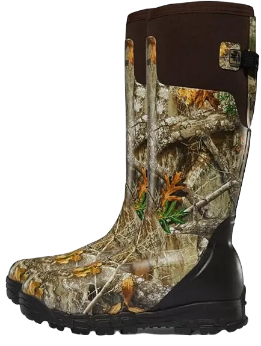

The 9 Best Muck Boots for Farming 2024
Shoes are essential in our daily lives, particularly in the workplace, and finding the best muck boots for farming requires careful consideration of certain features. Farming shoes, typically made from rubber, provide comfort and stability while working. It’s important to select rubber footwear that offers both shock absorption and waterproof qualities to enhance comfort and protection.
Quality shoes are designed to safeguard your feet from various elements, especially water, which can be detrimental to foot health. These boots help protect your toes, ankles, and feet from potential injuries. When it comes to farming shoes, they are specifically designed to provide a sense of security and comfort that surpasses ordinary footwear. They can help alleviate discomfort and fatigue, offering excellent grip and support throughout long workdays, making them a worthwhile investment.
-
#1
Muck boot chore classic
.webp)
When searching for farming boots, it’s essential to consider several important factors that we will outline for you. Farming shoes are designed not only for comfort but also to provide numerous beneficial features. One key aspect is breathability, which ensures optimal air circulation—ideal for warm weather. In colder conditions, these boots help protect against the elements, reducing the risk of discomfort or other issues.
Chore shoes excel in various scenarios, offering exceptional features to tackle the challenges faced during farming and other outdoor activities. The materials used in these boots are specifically selected to provide solutions for air circulation, water resistance, and overall durability. This ensures that you won’t experience overheating, and the robust construction allows for reliable performance in demanding environments.
Ultimately, investing in the right pair of farming boots means prioritizing comfort, protection, and functionality. With the right design and features, you can tackle your daily tasks with confidence, knowing your footwear will support you through various conditions and challenges. -
#2
Honey well servuscomfort soft toe
These shoes feature a durable rubber sole, offering exceptional quality and functionality for various tasks. Designed with comfort in mind, they provide excellent protection against water and injuries, making them ideal for farming—a demanding job that many people are passionate about. With these shoes, you can experience the best in comfort while effectively safeguarding your feet throughout your workday.
Durability is a key aspect of these shoes, ensuring they withstand the challenges of outdoor environments. Their lightweight design enhances comfort, allowing you to work without feeling weighed down or uncomfortable. You can move freely and efficiently, thanks to the thoughtful construction that supports your natural movements.
Additionally, both the outer and inner soles are built to endure various conditions, preventing any discomfort during wear. The shoes are also easy to clean, making maintenance simple, even after a day in the mud or dust. Crafted from high-quality materials, these shoes reflect our commitment to your well-being, allowing you to work in comfort and maintain good foot health. -
#3
Tingley 31151 economy
When it comes to footwear, it's essential to choose shoes made from high-quality materials that provide exceptional comfort. These shoes excel in water and oil resistance, making them perfect for various work environments. Their impressive features ensure that you won't have to worry about performance or reliability. With a focus on durability, these shoes not only look appealing but also offer the flexibility you need for daily wear.
These shoes are also available at a discounted price, making them a great value for the quality they provide. Cleaning them is a breeze, which is a crucial factor for anyone involved in farming or outdoor work. Their superior grip on various surfaces ensures stability and confidence, preventing any slips or falls during your tasks.
We guarantee that once you try these shoes, you'll fall in love with their comfort and support. We're committed to providing you with footwear that alleviates discomfort and enhances your overall work experience, ensuring your feet feel great all day long. -
#4
Kamik stomp rain boots
.webp)
It's clear how much parents care for their children, especially when it comes to choosing the right footwear for various weather conditions, whether muddy or otherwise unsuitable. Selecting the best shoes for kids is essential for their safety and comfort. Since children love to play outside, it's important to equip them with shoes that can handle slippery surfaces and provide protection. With their ability to repel water and their rubber soles, these shoes help keep feet dry and prevent them from becoming soggy.
Kids are naturally active, often jumping and running around while playing. That's why they need rubber shoes designed to offer both protection and ease of movement. The materials used in these shoes are high-quality and durable, ensuring a good level of water resistance. Additionally, the robust construction combined with the lightweight rubber sole makes these shoes comfortable for children, allowing them to engage in their activities without feeling weighed down.
Ultimately, choosing the right shoes for children means providing them with the necessary support and safety while they enjoy their playtime. These durable and lightweight shoes not only protect against the elements but also enhance their overall comfort, making outdoor adventures more enjoyable and worry-free for both kids and parents. -
#5
Muck core classic steel toe
When discussing shoes, it's essential to recognize their significance for everyone, especially for those engaged in heavy-duty tasks. It’s crucial to find footwear that provides comfort and support tailored to demanding activities.
Muck shoes stand out for their exceptional comfort and durability, making them a favorite among users. While some footwear may be easy to clean, they often lack the comfort or fit needed for various foot issues. However, these particular muck shoes offer outstanding value, packed with features that prioritize comfort and adaptability for all foot types, whether they have specific concerns or not.
Available at a reasonable price, these shoes ensure that wearers experience no discomfort. They feature air circulation in both the inner and outer soles, making them suitable for various weather conditions while providing essential protection. The extra rubber sole adds an additional layer of defense against potential injuries, allowing you to move confidently without worrying about pain. Designed to keep out extreme heat and cold, these shoes are your best option for reliable protection and comfort in challenging environments. -
#6
Viking footwear handyman
These shoes represent an excellent choice for daily use, particularly known for their durability and ability to protect your feet from various elements, ensuring a smooth walking experience. Many people enjoy engaging in activities that bring them joy while wearing these shoes, which offer a sleek design and comfort features ideal for heavy-duty work. This pair provides everything you need to tackle gardening or farming tasks effortlessly.
Recognizing the effort required for such labor-intensive jobs, we've designed these shoes with shock-absorbing capabilities and a durable inner sole to enhance comfort. When wearing them, you’ll appreciate their breathability, which helps keep your feet cool and dry, even in challenging conditions.
Importantly, these shoes are lightweight, ensuring that you can move freely without feeling weighed down. This combination of comfort and practicality makes them an ideal choice for anyone needing reliable footwear for demanding tasks. -
#7
Honey well ranger swamp
These sturdy shoes are designed to ensure you feel great while wearing them, eliminating any discomfort for your feet. Recognizing the time and effort required for heavy work, we created these shoes to provide enhanced comfort and durability, keeping your feet stable and smooth throughout your tasks.
Featuring a rubber sole, these shoes offer a comfortable, lightweight experience that helps maintain good foot health. Given that farming is both a rewarding and physically demanding job, it's crucial to have footwear that boasts excellent quality and breathability, protecting your feet from various challenges.
Additionally, these shoes are waterproof, ensuring everything runs smoothly without causing any issues for your feet. Their flexible design helps prevent cracks and allows for natural healing over time, making them a practical choice for anyone engaged in labor-intensive activities. -
#8
Lacross men’s hunting
Hunter and farming shoes stand out for their similar appearance and the high-quality materials used in their construction, making them both visually appealing and functional. These boots are designed for durability, showcasing excellent breathability that ensures you can work comfortably in various environments.
Highly recommended by users, these shoes offer fantastic ankle support, waterproof resistance, and effective moisture absorption, making them ideal for a range of activities and conditions. Their quality craftsmanship allows them to handle heavy loads without compromising your comfort, enabling you to move freely and work efficiently on the farm.
With these shoes, you’ll experience a noticeable improvement in your ability to tackle tasks with ease. They provide the support you need to work diligently without causing strain or discomfort to your feet, making them an essential choice for anyone engaged in outdoor work. -
#9
Baffin men’s hunter
When it comes to shoes that excel in farming and hunting, these options are noteworthy for their versatility and waterproof capabilities, ensuring comfort in various conditions. These affordable shoes are designed to provide superior comfort, making them a better choice than many alternatives on the market. Their robust construction protects your toes, which is essential for preventing injuries.
We offer top-quality shoes that help prevent slips and falls, featuring excellent shock absorption to enhance your overall comfort. Priced reasonably, these shoes come packed with features that demonstrate their effectiveness in challenging environments. Additionally, their easy-to-clean design adds to their appeal, making them a practical choice for anyone in need of reliable footwear.
Overall, these shoes represent a perfect blend of durability and comfort, ideal for long hours of work in demanding settings. Whether you're on a farm or out in the field, you can trust these shoes to keep your feet protected and comfortable throughout the day. Investing in such footwear not only enhances your performance but also ensures your safety while working.